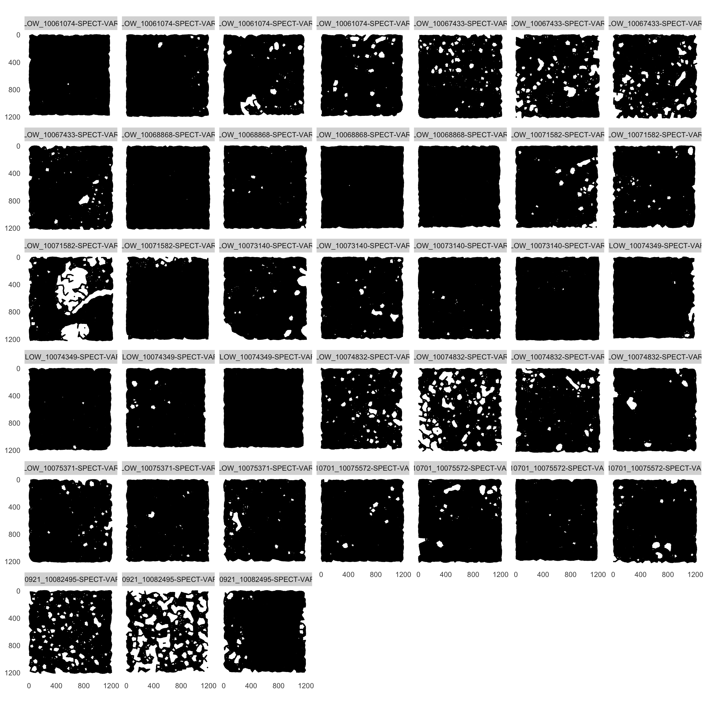
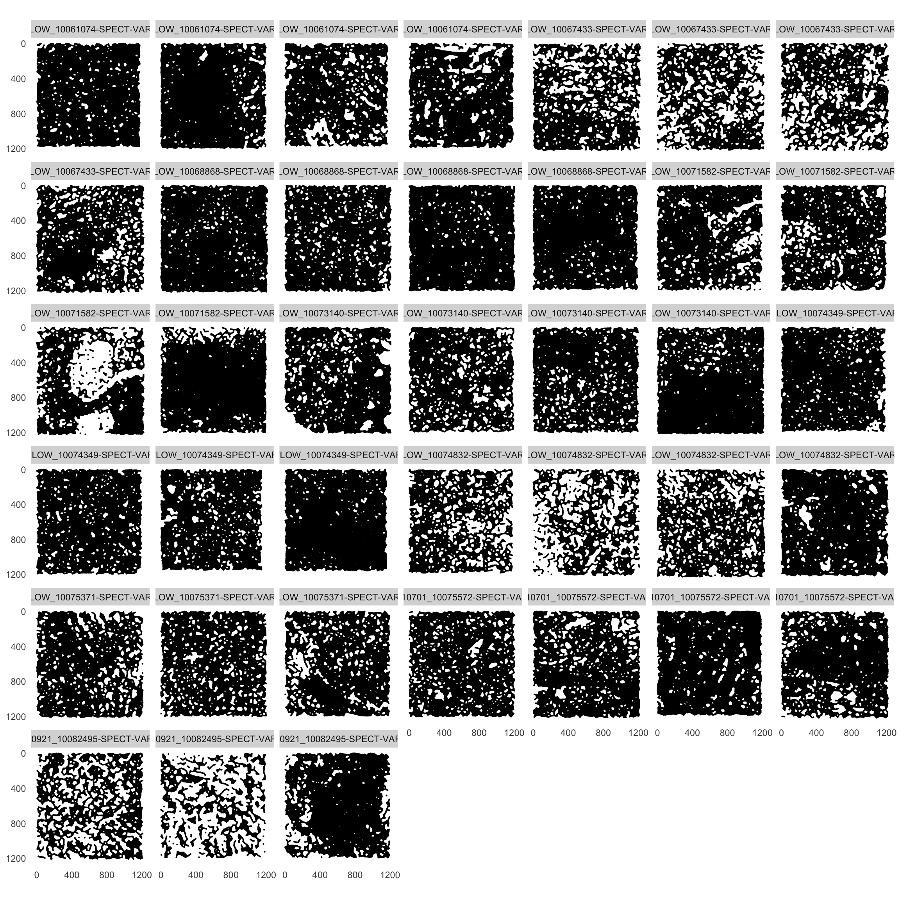

Last updated: 2023-06-13
Checks: 6 1
Knit directory: Analysis/
This reproducible R Markdown analysis was created with workflowr (version 1.7.0). The Checks tab describes the reproducibility checks that were applied when the results were created. The Past versions tab lists the development history.
The R Markdown file has unstaged changes. To know which version of
the R Markdown file created these results, you’ll want to first commit
it to the Git repo. If you’re still working on the analysis, you can
ignore this warning. When you’re finished, you can run
wflow_publish to commit the R Markdown file and build the
HTML.
Great job! The global environment was empty. Objects defined in the global environment can affect the analysis in your R Markdown file in unknown ways. For reproduciblity it’s best to always run the code in an empty environment.
The command set.seed(20220429) was run prior to running
the code in the R Markdown file. Setting a seed ensures that any results
that rely on randomness, e.g. subsampling or permutations, are
reproducible.
Great job! Recording the operating system, R version, and package versions is critical for reproducibility.
Nice! There were no cached chunks for this analysis, so you can be confident that you successfully produced the results during this run.
Great job! Using relative paths to the files within your workflowr project makes it easier to run your code on other machines.
Great! You are using Git for version control. Tracking code development and connecting the code version to the results is critical for reproducibility.
The results in this page were generated with repository version 9a60017. See the Past versions tab to see a history of the changes made to the R Markdown and HTML files.
Note that you need to be careful to ensure that all relevant files for
the analysis have been committed to Git prior to generating the results
(you can use wflow_publish or
wflow_git_commit). workflowr only checks the R Markdown
file, but you know if there are other scripts or data files that it
depends on. Below is the status of the Git repository when the results
were generated:
Ignored files:
Ignored: .DS_Store
Ignored: Alignment/
Ignored: Figures/.Rproj.user/
Ignored: Figures/output/.DS_Store
Ignored: IMC/.DS_Store
Ignored: IMC/Analysis/.DS_Store
Ignored: IMC/Analysis/.Rproj.user/
Ignored: IMC/Analysis/docs/.DS_Store
Ignored: comparisons/.DS_Store
Ignored: comparisons/.Rproj.user/
Ignored: comparisons/analysis/figure/
Ignored: comparisons/code/.DS_Store
Ignored: comparisons/code/.ipynb_checkpoints/
Ignored: mIF/.DS_Store
Ignored: mIF/Analysis/.Rproj.user/
Ignored: mIF/Analysis/analysis/.DS_Store
Unstaged changes:
Modified: IMC/Analysis/analysis/05_predict_celltypes.Rmd
Modified: mIF/Analysis/analysis/01_read_data.Rmd
Note that any generated files, e.g. HTML, png, CSS, etc., are not included in this status report because it is ok for generated content to have uncommitted changes.
These are the previous versions of the repository in which changes were
made to the R Markdown
(mIF/Analysis/analysis/01_read_data.Rmd) and HTML
(mIF/Analysis/docs/01_read_data.html) files. If you’ve
configured a remote Git repository (see ?wflow_git_remote),
click on the hyperlinks in the table below to view the files as they
were in that past version.
| File | Version | Author | Date | Message |
|---|---|---|---|---|
| Rmd | 9a60017 | nilseling | 2023-06-13 | Moved image reading into main script |
| Rmd | de85ab7 | nilseling | 2023-04-28 | Recompiled IMC and mIF workflows |
| Rmd | d077ceb | nilseling | 2023-03-31 | Modifications |
| html | d077ceb | nilseling | 2023-03-31 | Modifications |
| html | 8cba732 | nilseling | 2023-02-28 | Recompiled with new results |
| Rmd | 2d8fb90 | nilseling | 2023-02-20 | Recompiled comparison scripts |
| html | 2d8fb90 | nilseling | 2023-02-20 | Recompiled comparison scripts |
| Rmd | 7371b3e | nilseling | 2023-02-15 | Compiled mIF workflow |
| html | 7371b3e | nilseling | 2023-02-15 | Compiled mIF workflow |
| Rmd | b749467 | nilseling | 2023-02-06 | Removed steinbock analysis |
| Rmd | dc9748d | nilseling | 2022-10-26 | New comparisons |
| html | dc9748d | nilseling | 2022-10-26 | New comparisons |
| Rmd | 189eaa3 | nilseling | 2022-05-25 | Restructured for steinbock data |
| Rmd | 9fbdaac | nilseling | 2022-05-05 | Define colors and build graph |
| html | 9fbdaac | nilseling | 2022-05-05 | Define colors and build graph |
| Rmd | add09ed | nilseling | 2022-05-01 | Added marker expression comparison |
| html | add09ed | nilseling | 2022-05-01 | Added marker expression comparison |
| Rmd | 9938278 | nilseling | 2022-04-30 | Create SCE object for IF data |
| Rmd | c22d4e1 | nilseling | 2022-04-29 | Added more projects |
In this script, we will read in the mIF data that was processed by IFQuant.
These will be shared across all datasets.
library(RColorBrewer)
color_vectors <- list()
matched_celltype <- setNames(c("coral3", "chartreuse3", "cyan2", "darkgoldenrod2", "grey75", "#DC6FE2", "#BF0A3D", "#F4800C"),
c("Tumor", "Tcell", "Neutrophil", "MacCD163",
"other", "DC", "Bcell", "BnTcell"))
patient_id <- setNames(brewer.pal(10, "Set3"),
c("10082495", "10067433", "10074349", "10075572", "10068868",
"10073140", "10075371", "10061074", "10071582", "10074832"))
color_vectors$matched_celltype <- matched_celltype
color_vectors$patient_id <- patient_idFirst, we will start with reading in the whole slide data.
library(SingleCellExperiment)
library(tidyverse)
cur_files <- list.files("/Volumes/immucan_volume/processed_data/Panel_1/2022_WORKFLOW/mIF/data/whole_slide/", pattern = "cells_properties_", full.names = TRUE)
cur_files_2 <- list.files("/Volumes/immucan_volume/processed_data/Panel_1/2022_WORKFLOW/mIF/data/whole_slide/", pattern = "cells_properties2_", full.names = TRUE)
# Map between Lausanne and Zurich IDs
cur_table <- read_csv("/Volumes/immucan_volume/processed_data/Panel_1/2022_WORKFLOW/comparisons/sample_mapping.csv")
# Read in data
cur_sces <- lapply(seq_along(cur_files), function(x){
cur_data <- read.csv(cur_files[x], sep = "\t")
cur_data_2 <- read.csv(cur_files_2[x], sep = "\t")
stopifnot(all.equal(cur_data$cell.ID, cur_data_2$cell.ID))
cur_data <- cbind(cur_data, cur_data_2[,c("cell.area", "TLS.ID")])
cur_counts <- t(cur_data[,grepl("score.normalized", colnames(cur_data))])
cur_raw <- t(cur_data[,grepl("score$", colnames(cur_data))])
stopifnot(all.equal(str_split(rownames(cur_raw), "\\.", simplify = TRUE), str_split(rownames(cur_counts), "\\.", simplify = TRUE)[,1:2]))
rownames(cur_counts) <- rownames(cur_raw) <- str_split(rownames(cur_raw), "\\.",
simplify = TRUE)[,1]
cur_sce <- SingleCellExperiment(assays = list(counts = cur_counts,
raw = cur_raw))
colData(cur_sce) <- DataFrame(cur_data[,!grepl("score", colnames(cur_data))])
colData(cur_sce)$Lausanne_id <- str_split(str_split(cur_files[x], "/", simplify = TRUE)[,11], "_#_", simplify = TRUE)[,1]
colData(cur_sce)$Lausanne_id <- unlist(lapply(str_split(colData(cur_sce)$Lausanne_id, "-"), function(y){paste(y[1:3], collapse = "-")}))
colData(cur_sce)$sample_id <- as.character(cur_table$IMC[match(unique(colData(cur_sce)$Lausanne_id), cur_table$mIF)])
colData(cur_sce)$patient_id <- as.character(colData(cur_sce)$sample_id)
return(cur_sce)
})
cur_colnames <- Reduce(c, lapply(cur_sces, function(x){colnames(colData(x))}))
cur_colnames <- unique(cur_colnames)
cur_sces <- lapply(cur_sces, function(x){
cur_cd <- DataFrame(matrix(NA, nrow = ncol(x), ncol = length(cur_colnames)))
colnames(cur_cd) <- cur_colnames
cur_cd[colnames(colData(x))] <- colData(x)
stopifnot(all.equal(cur_cd$cell.ID, x$cell.ID))
colData(x) <- cur_cd
return(x)
})
sce <- do.call("cbind", cur_sces)
# Transform counts
assay(sce, "exprs") <- log(counts(sce))
# Add phenotype labels
cur_key <- as.data.frame(read_csv("~/Github/mIF_cell_types/cell_types/phenotype_key_IF1.csv"))
cur_key[cur_key$phenotype == "CD15+CK+CD3-CD11c+CD20+CD163+","celltype"] <- "MacCD163"
cur_key[cur_key$phenotype == "CD15-CK+CD3-CD11c+CD20+CD163+","celltype"] <- "MacCD163"
cur_key[cur_key$phenotype == "CD15+CK+CD3-CD11c-CD20+CD163+","celltype"] <- "MacCD163"
cur_key[cur_key$phenotype == "CD15-CK+CD3-CD11c-CD20+CD163+","celltype"] <- "MacCD163"
cur_key[cur_key$phenotype == "CD15+CK+CD3-CD11c-CD20+CD163-","celltype"] <- "Tumor_CD15"
cur_key[cur_key$phenotype == "CD15-CK+CD3-CD11c-CD20+CD163-","celltype"] <- "Tumor"
cur_key[cur_key$phenotype == "CD15+CK+CD3+CD11c+CD20+CD163+","celltype"] <- "T"
cur_key[cur_key$phenotype == "CD15-CK+CD3+CD11c+CD20+CD163+","celltype"] <- "T"
cur_key[cur_key$phenotype == "CD15+CK+CD3+CD11c-CD20+CD163+","celltype"] <- "T"
cur_key[cur_key$phenotype == "CD15-CK+CD3+CD11c-CD20+CD163+","celltype"] <- "T"
cur_key[cur_key$phenotype == "CD15+CK+CD3+CD11c-CD20+CD163-","celltype"] <- "T"
cur_key[cur_key$phenotype == "CD15-CK+CD3+CD11c-CD20+CD163-","celltype"] <- "T"
rownames(cur_key) <- cur_key$phenotype
sce$celltype <- cur_key[sce$phenotype,2]
sce$matched_celltype <- sce$celltype
sce$matched_celltype[grepl("Tumor", sce$matched_celltype)] <- "Tumor"
sce$matched_celltype[sce$matched_celltype == "T"] <- "Tcell"
sce$matched_celltype[sce$matched_celltype == "B"] <- "Bcell"
sce$matched_celltype[sce$matched_celltype == "BnT"] <- "BnTcell"
sce$matched_celltype[sce$matched_celltype == "Stromal_cell"] <- "other"
sce$indication <- sce$Lausanne_id
sce$indication[grepl("BC", sce$indication)] <- "BCC"
sce$indication[grepl("CRC", sce$indication)] <- "CRC"
sce$indication[grepl("NSCLC", sce$indication)] <- "NSCLC"
sce$indication[grepl("RCC", sce$indication)] <- "RCC"
sce$indication[grepl("SCCHN", sce$indication)] <- "SCCHN"
metadata(sce)$color_vectors <- color_vectors
saveRDS(sce, "/Volumes/immucan_volume/processed_data/Panel_1/2022_WORKFLOW/mIF/Rout/sce_whole_slide.rds")We will read in the tsv files that contain cells from the same region
as the IMC acquisition and store them in
SingleCellExperiment objects.
cur_files <- list.files("/Volumes/GoogleDrive/My Drive/IMMUcan_workflow/data/Lausanne_data/final/",
recursive = TRUE,
pattern = "cells_properties_ROI_coordinates.tsv.gz", full.names = TRUE)
cur_sces <- lapply(cur_files, function(x){
cur_data <- read.csv(x, sep = "\t")
cur_counts <- t(cur_data[,grepl("score.normalized", colnames(cur_data))])
cur_raw <- t(cur_data[,grepl("score$", colnames(cur_data))])
stopifnot(all.equal(str_split(rownames(cur_raw), "\\.", simplify = TRUE), str_split(rownames(cur_counts), "\\.", simplify = TRUE)[,1:2]))
rownames(cur_counts) <- rownames(cur_raw) <- str_split(rownames(cur_raw), "\\.",
simplify = TRUE)[,1]
cur_sce <- SingleCellExperiment(assays = list(counts = cur_counts,
raw = cur_raw))
colData(cur_sce) <- DataFrame(cur_data[,!grepl("score", colnames(cur_data))])
colData(cur_sce)$sample_id <- str_extract(x, "IMMUcan_[2|B].*00[1-9]{1}")
colData(cur_sce)$patient_id <- sub("-", "", str_extract(cur_sce$sample_id, "[0-9]{8}-"))
colData(cur_sce)$ROI <- str_extract(cur_sce$sample_id, "00[1-9]{1}$")
# Add additional information from whole slide
cur_sce_2 <- sce[,sce$patient_id == unique(cur_sce$patient_id)]
cur_df <- colData(cur_sce_2)[match(cur_sce$cell.ID, cur_sce_2$cell.ID),]
# Sanity check that phenotypes and cell IDs match
stopifnot(all.equal(cur_sce$phenotype, cur_df$phenotype))
stopifnot(all.equal(cur_sce$cell.ID, cur_df$cell.ID))
# Transfer more information
colData(cur_sce) <- cbind(colData(cur_sce), cur_df[,c("cell.area", "TLS.ID", "Lausanne_id")])
return(cur_sce)
})
cur_colnames <- Reduce(c, lapply(cur_sces, function(x){colnames(colData(x))}))
cur_colnames <- unique(cur_colnames)
cur_sces <- lapply(cur_sces, function(x){
cur_cd <- DataFrame(matrix(NA, nrow = ncol(x), ncol = length(cur_colnames)))
colnames(cur_cd) <- cur_colnames
cur_cd[colnames(colData(x))] <- colData(x)
stopifnot(all.equal(cur_cd$cell.ID, x$cell.ID))
colData(x) <- cur_cd
return(x)
})
sce <- do.call("cbind", cur_sces)
# Transform counts
assay(sce, "exprs") <- log(counts(sce))
metadata(sce)$color_vectors <- color_vectorsWe will now annotate the cells based on the celltype annotation key.
sce$celltype <- cur_key[sce$phenotype,2]
sce$matched_celltype <- sce$celltype
sce$matched_celltype[grepl("Tumor", sce$matched_celltype)] <- "Tumor"
sce$matched_celltype[sce$matched_celltype == "Stromal_cell"] <- "other"Finally, we will add a 20µm and 30µm expansion interaction graph.
library(imcRtools)
# 30µm expansion graph
sce <- buildSpatialGraph(sce, img_id = "sample_id", type = "expansion",
coords = c("nucleus.x", "nucleus.y"),
threshold = 60, name = "expansion_60")
# 20µm expansion graph
sce <- buildSpatialGraph(sce, img_id = "sample_id", type = "expansion",
coords = c("nucleus.x", "nucleus.y"),
threshold = 40, name = "expansion_40")
plotSpatial(sce, img_id = "sample_id", coords = c("nucleus.x", "nucleus.y"),
draw_edges = TRUE, colPairName = "expansion_60", node_size_fix = 0.1,
nodes_first = TRUE)
plotSpatial(sce, img_id = "sample_id", coords = c("nucleus.x", "nucleus.y"),
draw_edges = TRUE, colPairName = "expansion_40", node_size_fix = 0.1,
nodes_first = TRUE)
Finally, we will save the generated object
saveRDS(sce, "/Volumes/immucan_volume/processed_data/Panel_1/2022_WORKFLOW/mIF/Rout/sce_ROIs.rds")Here, we read in the single-channel images and create multi-channel images.
library(EBImage)
library(tiff)
library(cytomapper)
cur_path <- "/Volumes/immucan_volume/processed_data/Panel_1/2022_WORKFLOW/mIF/multichannel_images/img/"
if (!dir.exists(cur_path)) dir.create(cur_path)
cur_folders <- list.files("/Volumes/GoogleDrive/My Drive/IMMUcan_workflow/data/Lausanne_data/final/",
full.names = TRUE)
for (i in seq_along(cur_folders)) {
if (length(list.files(cur_folders[i], pattern = "ROI_image.*.rds")) == 0) {
stop("Missing images.")
}
if (!all.equal(list.files(cur_folders[i], pattern = "ROI_image.*.rds"),
c("ROI_image_autofluorescence.rds", "ROI_image_CD11c.rds", "ROI_image_CD15.rds",
"ROI_image_CD163.rds", "ROI_image_CD20.rds", "ROI_image_CD3.rds",
"ROI_image_CK.rds", "ROI_image_DAPI.rds"))) {
stop("Wrong channel order")
}
cur_channels <- lapply(list.files(cur_folders[i],
pattern = "ROI_image.*.rds",
full.names = TRUE),
function(x) {
return(readRDS(x))
})
cur_channels <- abind(cur_channels, along = 3)
writeImage(as.array(cur_channels)/(2^16 - 1), paste0("/Volumes/immucan_volume/processed_data/Panel_1/2022_WORKFLOW/mIF/multichannel_images/img/",
basename(cur_folders[i]), ".tiff"),
bits.per.sample = 16)
}
images <- loadImages("/Volumes/immucan_volume/processed_data/Panel_1/2022_WORKFLOW/mIF/multichannel_images/img/", as.is = TRUE)
channelNames(images) <- c("af", "CD11c", "CD15", "CD163", "CD20", "CD3", "CK", "DAPI")
mcols(images) <- DataFrame(image = names(images),
sample_id = sub(".tiff", "", names(images)))
saveRDS(images, "/Volumes/immucan_volume/processed_data/Panel_1/2022_WORKFLOW/mIF/Rout/images.rds")
sessionInfo()R version 4.3.0 (2023-04-21)
Platform: x86_64-apple-darwin20 (64-bit)
Running under: macOS Big Sur 11.7.4
Matrix products: default
BLAS: /Library/Frameworks/R.framework/Versions/4.3-x86_64/Resources/lib/libRblas.0.dylib
LAPACK: /Library/Frameworks/R.framework/Versions/4.3-x86_64/Resources/lib/libRlapack.dylib; LAPACK version 3.11.0
locale:
[1] en_US.UTF-8/en_US.UTF-8/en_US.UTF-8/C/en_US.UTF-8/en_US.UTF-8
time zone: Europe/Zurich
tzcode source: internal
attached base packages:
[1] stats4 stats graphics grDevices utils datasets methods
[8] base
other attached packages:
[1] cytomapper_1.12.0 tiff_0.1-11
[3] EBImage_4.42.0 imcRtools_1.6.1
[5] SpatialExperiment_1.10.0 lubridate_1.9.2
[7] forcats_1.0.0 stringr_1.5.0
[9] dplyr_1.1.2 purrr_1.0.1
[11] readr_2.1.4 tidyr_1.3.0
[13] tibble_3.2.1 ggplot2_3.4.2
[15] tidyverse_2.0.0 SingleCellExperiment_1.22.0
[17] SummarizedExperiment_1.30.1 Biobase_2.60.0
[19] GenomicRanges_1.52.0 GenomeInfoDb_1.36.0
[21] IRanges_2.34.0 S4Vectors_0.38.1
[23] BiocGenerics_0.46.0 MatrixGenerics_1.12.0
[25] matrixStats_1.0.0 RColorBrewer_1.1-3
[27] workflowr_1.7.0
loaded via a namespace (and not attached):
[1] later_1.3.1 bitops_1.0-7
[3] R.oo_1.25.0 svgPanZoom_0.3.4
[5] polyclip_1.10-4 lifecycle_1.0.3
[7] sf_1.0-13 edgeR_3.42.4
[9] rprojroot_2.0.3 processx_3.8.1
[11] lattice_0.21-8 vroom_1.6.3
[13] MASS_7.3-60 magrittr_2.0.3
[15] limma_3.56.1 sass_0.4.6
[17] rmarkdown_2.22 jquerylib_0.1.4
[19] yaml_2.3.7 httpuv_1.6.11
[21] sp_1.6-1 DBI_1.1.3
[23] abind_1.4-5 zlibbioc_1.46.0
[25] R.utils_2.12.2 ggraph_2.1.0
[27] RCurl_1.98-1.12 tweenr_2.0.2
[29] git2r_0.32.0 GenomeInfoDbData_1.2.10
[31] ggrepel_0.9.3 RTriangle_1.6-0.12
[33] terra_1.7-29 pheatmap_1.0.12
[35] units_0.8-2 dqrng_0.3.0
[37] svglite_2.1.1 DelayedMatrixStats_1.22.0
[39] codetools_0.2-19 DropletUtils_1.20.0
[41] DelayedArray_0.26.3 DT_0.28
[43] scuttle_1.10.1 ggforce_0.4.1
[45] tidyselect_1.2.0 raster_3.6-20
[47] farver_2.1.1 viridis_0.6.3
[49] jsonlite_1.8.5 BiocNeighbors_1.18.0
[51] e1071_1.7-13 ellipsis_0.3.2
[53] tidygraph_1.2.3 systemfonts_1.0.4
[55] tools_4.3.0 Rcpp_1.0.10
[57] glue_1.6.2 gridExtra_2.3
[59] xfun_0.39 HDF5Array_1.28.1
[61] shinydashboard_0.7.2 withr_2.5.0
[63] fastmap_1.1.1 rhdf5filters_1.12.1
[65] fansi_1.0.4 callr_3.7.3
[67] digest_0.6.31 timechange_0.2.0
[69] R6_2.5.1 mime_0.12
[71] colorspace_2.1-0 jpeg_0.1-10
[73] R.methodsS3_1.8.2 utf8_1.2.3
[75] generics_0.1.3 data.table_1.14.8
[77] class_7.3-22 graphlayouts_1.0.0
[79] httr_1.4.6 htmlwidgets_1.6.2
[81] S4Arrays_1.0.4 whisker_0.4.1
[83] pkgconfig_2.0.3 gtable_0.3.3
[85] XVector_0.40.0 htmltools_0.5.5
[87] fftwtools_0.9-11 scales_1.2.1
[89] png_0.1-8 knitr_1.43
[91] rstudioapi_0.14 tzdb_0.4.0
[93] rjson_0.2.21 proxy_0.4-27
[95] cachem_1.0.8 rhdf5_2.44.0
[97] KernSmooth_2.23-21 parallel_4.3.0
[99] vipor_0.4.5 concaveman_1.1.0
[101] pillar_1.9.0 grid_4.3.0
[103] vctrs_0.6.2 promises_1.2.0.1
[105] distances_0.1.9 beachmat_2.16.0
[107] xtable_1.8-4 archive_1.1.5
[109] beeswarm_0.4.0 evaluate_0.21
[111] magick_2.7.4 cli_3.6.1
[113] locfit_1.5-9.7 compiler_4.3.0
[115] rlang_1.1.1 crayon_1.5.2
[117] labeling_0.4.2 classInt_0.4-9
[119] ps_1.7.5 getPass_0.2-2
[121] fs_1.6.2 ggbeeswarm_0.7.2
[123] stringi_1.7.12 viridisLite_0.4.2
[125] BiocParallel_1.34.2 nnls_1.4
[127] munsell_0.5.0 Matrix_1.5-4
[129] hms_1.1.3 sparseMatrixStats_1.12.0
[131] bit64_4.0.5 Rhdf5lib_1.22.0
[133] shiny_1.7.4 highr_0.10
[135] igraph_1.4.3 bslib_0.4.2
[137] bit_4.0.5